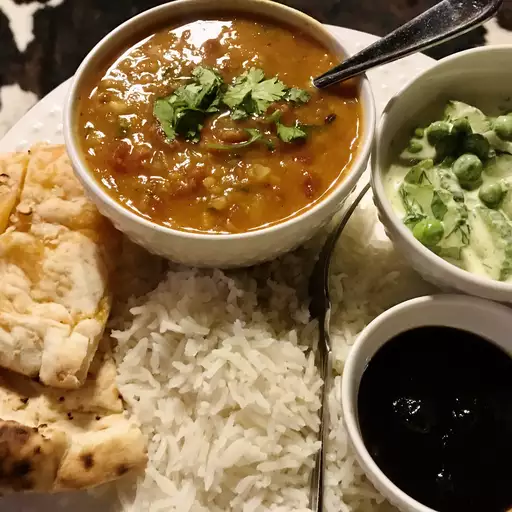

Dal Makhani

Description
Dal Makhani is a classic and beloved North Indian dish made with whole black lentils (urad dal) and kidney beans (rajma), slow-cooked in a creamy, buttery tomato-based gravy.
This dish is renowned for its rich, smoky flavors and velvety texture, achieved through hours of slow cooking and the generous use of cream and butter.
Often enjoyed during festive occasions and special meals, Dal Makhani is a staple in Indian households and a popular choice in restaurants.
It pairs excellently with naan, rice, or roti, making it a versatile and satisfying meal. Experience the authentic taste of Indian comfort food with this delicious and hearty dish.
Ingredients
- 1 cup lentils
- ¼ cup dry kidney beans (Optional)
- water to cover
- 5 cups water
- salt to taste
- 2 tablespoons vegetable oil
- 1 tablespoon cumin seeds
- 4 cardamom pods
- 1 cinnamon stick, broken
- 4 bay leaves
- 6 whole cloves
- 1 ½ tablespoons ginger paste
- 1 ½ tablespoons garlic paste
- ½ teaspoon ground turmeric
- 1 pinch cayenne pepper, or more to taste
- 1 cup canned tomato puree, or more to taste
- 1 tablespoon chili powder
- 2 tablespoons ground coriander
- ¼ cup butter
- 2 tablespoons dried fenugreek leaves (Optional)
- ½ cup cream (Optional)
Steps
- Place lentils and kidney beans in a large bowl; cover with plenty of water. Soak for at least 2 hours or overnight. Drain.
- Cook lentils, kidney beans, 5 cups water, and salt in a pot over medium heat until tender, stirring occasionally, about 1 hour.
- Remove from heat and set aside. Keep the lentils, kidney beans, and any excess cooking water in the pot.
- Heat vegetable oil in a saucepan over medium-high heat. Cook cumin seeds in the hot oil until they begin to pop, 1 to 2 minutes.
- Add cardamom pods, cinnamon stick, bay leaves, and cloves; cook until bay leaves turn brown, about 1 minute.
- Reduce heat to medium-low; add ginger paste, garlic paste, turmeric, and cayenne pepper. Stir to coat.
- Stir tomato puree into spice mixture; cook over medium heat until slightly reduced, about 5 minutes.
- Add chili powder, coriander, and butter; cook and stir until butter is melted.
- Stir lentils, kidney beans and any leftover cooking water into tomato mixture; bring to a boil, reduce heat to low.
- Stir fenugreek into lentil mixture. Cover saucepan and simmer until heated through, stirring occasionally, about 45 minutes.
- Add cream and cook until heated through, 2 to 4 minutes.